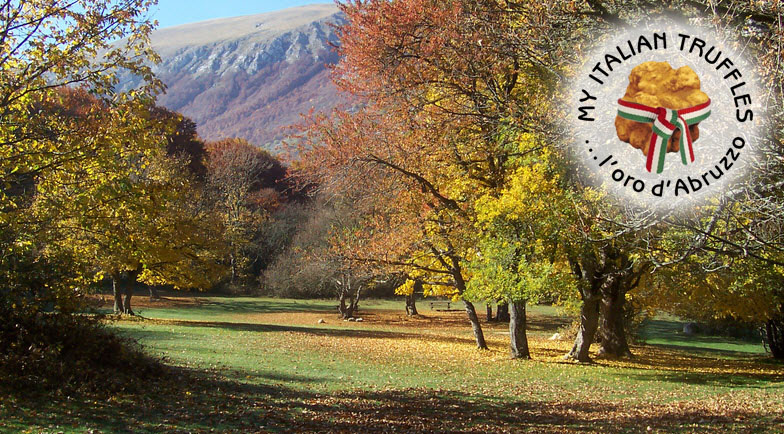

About Abruzzo
The region of Abruzzo is in central Italy, south of the more famous regions of Tuscany and Umbria. Abruzzo is a true gem, an undiscovered treasure of Italy. Nature has blessed it with both rugged mountains (White Truffles are best when located at 800 meters and above) and long sandy beaches on the Adriatic coast.

Abruzzo boasts the title of Greenest Region in Europe thanks to two third of its territory, the largest in Europe, set aside as national parks and protected nature reserves. In the region there are three national parks, one regional park and 38 protected nature reserves.
Green and Organic are not merely words in Abruzzo, in fact, green and organic have been second nature to the people of Abruzzo for many years; long before they were used in other parts of the world! Well known for its variety and richness, owing to the diversity of its topology, soil and weather, Abruzzo boasts one of the best cuisines to be found in Italy a "gastronomical heaven."
The London Times newspaper described Abruzzo as the king of Agritourismo
When the Italian diplomat and journalist Primo Levi visited Abruzzo he described it as "forte e gentile" (strong and gentle) which, he said, best synthesized the beauty of the region and the character of its people. The quote "forte e gentile" has since become the motto of the region and its inhabitants.
Abruzzo boasts the title of Greenest Region in Europe thanks to two third of its territory, the largest in Europe, set aside as national parks and protected nature reserves. In the region there are three national parks, one regional park and 38 protected nature reserves.
Green and Organic are not merely words in Abruzzo, in fact, green and organic have been second nature to the people of Abruzzo for many years; long before they were used in other parts of the world! Well known for its variety and richness, owing to the diversity of its topology, soil and weather, Abruzzo boasts one of the best cuisines to be found in Italy a "gastronomical heaven."

The London Times newspaper described Abruzzo as the king of Agritourismo
When the Italian diplomat and journalist Primo Levi visited Abruzzo he described it as "forte e gentile" (strong and gentle) which, he said, best synthesized the beauty of the region and the character of its people. The quote "forte e gentile" has since become the motto of the region and its inhabitants.